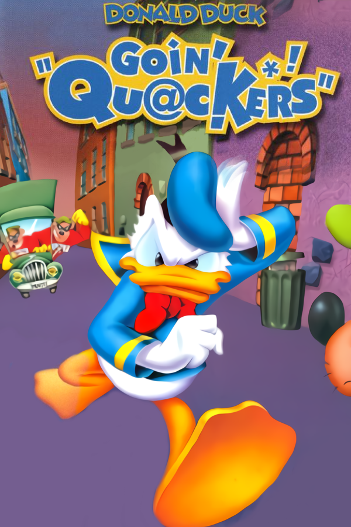
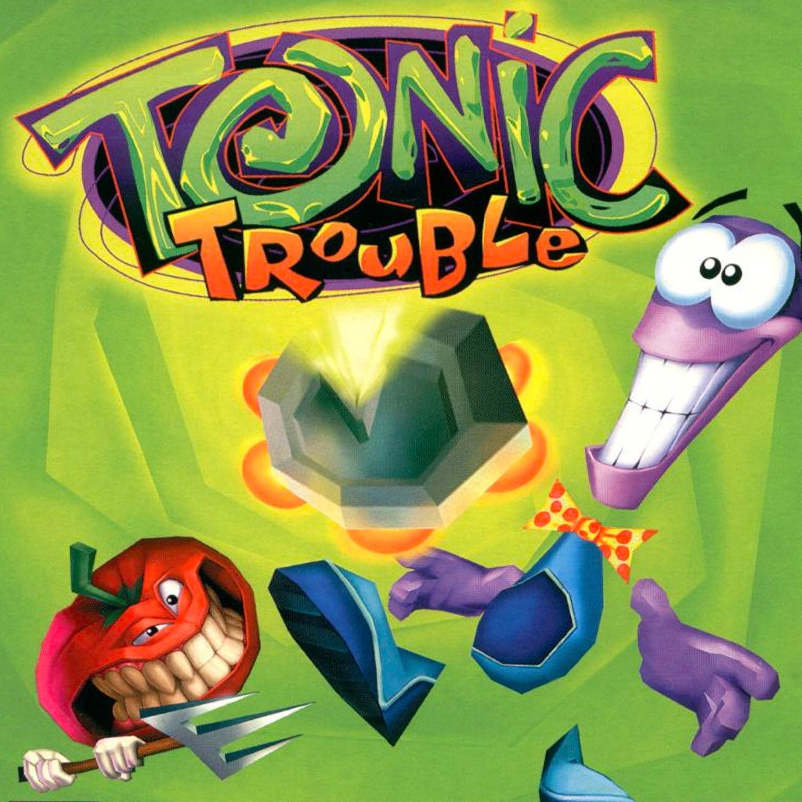

Bienvenue sur mon
portfolio de jeux vidéo.
Je travaille dans l’industrie du jeu vidéo depuis plus de 25 ans. Je conçois des niveaux, des missions et des quêtes, je mets en scène des cinématiques et j’écris des histoires.
Featured work


BioShock 2 / Minerva's Den2010
Level design · Cinematic scripting


Tomb Raider: Underworld + DLC2008–09
Cinématiques · Outils de caméra

Weird West2022
Conception de quêtes · Écriture · Script d’événements
Autres réalisations

Immortals of Aveum
Conception de niveaux et de missions · 2023

Star Wars: Squadrons
Conception de missions · 2020

Star Wars Battlefront II
Conception de missions et événements scriptés · 2017

Star Wars: Uprising
Conception de niveaux · 2015

The Bureau: XCOM Declassified
Conception de niveaux et de missions · 2013

Splinter Cell: Double Agent
Conception de niveaux et cinématiques · 2006

Far Cry Instincts
Art et conception de niveaux · 2005
Débuts de carrière

Donald Duck: Goin’ Quackers
Art · Adaptation GameCube · 2002

Open Season
Travail sur les cinématiques · 2006

Tarzan Untamed
Art · 2001

F1 Racing Championship
Art · 2000

Tonic Trouble
Art · 1999
Mon parcours
Concepteur de métier,
conteur dans l’âme.
J’ai commencé ma carrière dans le jeu vidéo comme artiste à Montréal en 1998, avant de me tourner vers la conception en 2004. Depuis, j’ai travaillé en conception de niveaux, de missions et de quêtes, en conception narrative, en cinématiques et en écriture. J’ai partagé ma carrière entre Montréal et le nord de la Californie, où j’ai vécu près de neuf ans. De retour dans la région de Montréal, je collabore depuis quelques années à distance avec des studios américains.
Pendant mon séjour en Californie, j’ai suivi le programme d’écriture de longs métrages de UCLA Extension, que j’ai terminé avec mention. Mon court scénario Trunk a remporté le premier prix d’un concours de scénarisation en ligne et s’est classé parmi les trois premiers de plusieurs autres concours.
J’ai eu ma première occasion de contribuer à l’écriture d’un jeu avec Weird West, une expérience que je souhaite renouveler. Les jeux qui me marquent le plus sont ceux où les mécaniques de jeu et la narration se renforcent mutuellement. C’est cette rencontre entre l’expérience de jeu et l’histoire qui m’intéresse particulièrement.
Ouvert à de nouvelles possibilités
Disponible pour des postes permanents, des contrats et des mandats à la pige, y compris à distance pour des studios qui recrutent au Canada.